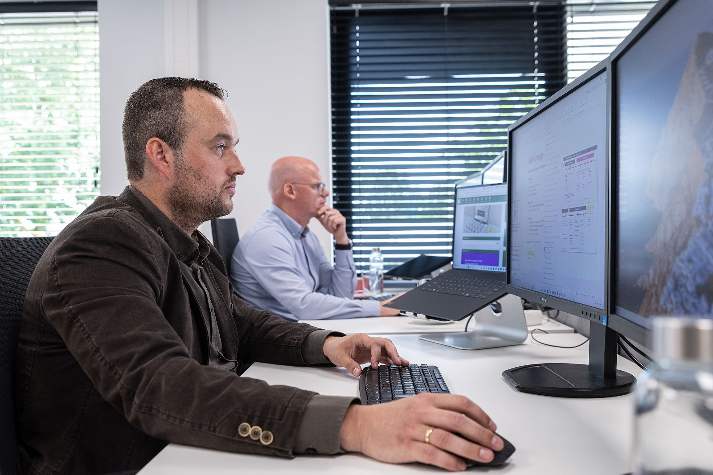

Niet alleen klaar voor de volgende verandering. Klaar voor iedere verandering daarna.
Digitalisering is geen project met een einddatum. Technologie, AI, functies, vaardigheden en werkprocessen blijven veranderen. Digital Fit is de structurele ontwikkelaanpak waarmee je organisatie steeds weet waar ze staat, keuzes maakt, ontwikkelt, toepast, meet en bijstuurt. Wij blijven daar als onafhankelijke partner bij betrokken.

Digitaliseren lukt vaak één keer. Bijblijven is het probleem.
Een organisatie voert BIM in, koopt software of start met AI. Twee jaar later is de kennis verwaterd, zijn functies veranderd, is de techniek verder en begint het opnieuw met een nieuw project. Elke keer van nul, elke keer afhankelijk van een paar mensen.
Digital Fit draait dat om. Je bouwt een organisatie die zelf kan zien wat verandert, daar keuzes over maakt en haar mensen daarin meeneemt. Niet één keer digitaliseren, maar blijvend kunnen aanpassen en verbeteren.
Los zijn het drie diensten. In Digital Fit worden ze één doorlopende samenwerking, met sectorkennis van bouw en vastgoed, technologie én leren en veranderen.
Weten, kiezen, doen, meten en bijstellen. Elk kwartaal opnieuw.
Geen losse opleidingen en geen losse adviesuren. Wel een vast ritme waarin richting (Strategy), verandering in het werk (Transformation) en de ontwikkeling van mensen (Capability) bij elkaar blijven, jaar na jaar.
Nieuwe technologie omzetten in bedrijfswaarde. Blijvend.
Geen abonnement op opleidingen en geen adviesbundel. Wel een organisatie die na elke verandering sterker staat dan ervoor.
Een ontwikkelrelatie op maat van je organisatie
De vorm hangt af van omvang, vestigingen en waar je nu staat. Vast onderdeel is altijd: een scan aan het begin, een vaste adviseur, een kwartaalritme met directie en HR, en opleiden en begeleiden waar het werk verandert. Sessies en events horen erbij.
Pakketten, omvang en investering werken we samen met je uit na de scan.
Vormen en tarieven: te bepalen door BIM4ALL.Bouw, installatie, toeleveranciers en vastgoed
Sectorkennis is de reden dat het werkt: we kennen de projecten, de software, de ketenpartners en de krapte op de arbeidsmarkt.
De techniek wacht niet. Je mensen wel, als je ze niet meeneemt.
Software en AI veranderen elk jaar. Wat blijft, is de organisatie die kennis borgt, overdraagt en snel kan bijsturen. Daar begin je liever dit kwartaal mee dan volgend jaar.
Meerjarig samen vooruit?
Vraag over strategie of een ontwikkelvraag voor je organisatie? Bel Melvin. In een half uur weten we waar jullie staan en of Digital Fit past. Het begint met een scan, niet met een contract.
Op werkdagen reageren we dezelfde dag. Liever eerst zelf kijken? Doe de zelfscan.